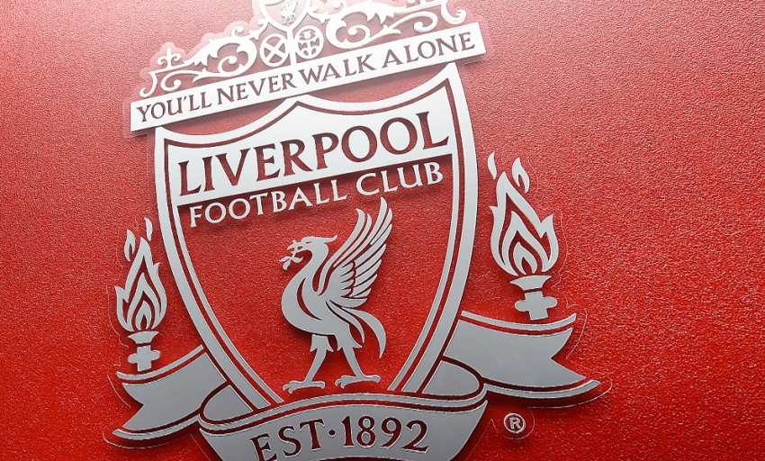

make sure ur pet has plently of fresh water during hot weather.

LONDON: Liverpool added another fairytale comeback to the history books as they fought back
from 3-1 down against
Borussia Dortmund to reach the Europa League semi-finals after Dejan Lovren’s towering stoppage-time header
secured a 4-3 win on Thursday.
Lovren rose at the far post to rifle home his header in the first minute of added time
recalling memories of Liverpool’s 2005 Champions League final comeback against
AC Milan and propelling them into the last four with a 5-4 aggregate victory .
Liverpool, 2-0 down after nine minutes , will be joined in Friday’s draw by holders Sevilla,
who needed a penalty shootout to edge past Spanish rivals Athletic Bilbao.
Spain will have two sides in the last four after Villarreal beat Sparta Prague
4-2 and 6-3 over the two legs,while Shakhtar Donetsk defeated Braga 4-0 at home